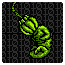

↑Click there!↑
Here's everything I've done related to the Godzilla Monster of Monsters creepypasta (NGC), made by CosbyDaf.
 Discarded stuff Discarded stuff |
Old Screenshots |  THE BOARD THE BOARD |
|---|
The main thing here is NES Godzilla: Wrong Way, my own “fanpasta” that started out as a
Godzilla Replay what-if
(sequel to the orignial story), and is now becoming more of its own.
| Video | Coments |
|---|---|
| I don't have much to say about the prologue, I just did it to give some context before GLACIER. | |
|
As I mentioned in the description of the original video, the first half of GLACIER, up to the TEXTALAD fight if I remember correctly, dates back to 2019.At that time I shared several old versions of screenshots over the NGC discord server, until, overnight, I was kicked off of it without any warning. This discouraged me a lot, since that was the only place where I shared the project, so I left it gathering dust in my project folder for years. Between this and the fact that there was no news of new projects on the horizon, it made me distance myself from the topic in general.
My interest returned with the release of the first part of chapter 6 of replay, and with that, my interest in the subject. After thinking about several ideas, and after uploading the video of the replay bosses theory, I decided to revive Wrong Way, at first only completing the first chapter. About the second half, removing the temple of silence and the DOGORA and LETHAR fights, I didn't know very well what to do, so I made the swap of environment to the remaining 2 levels. At the beginning I thought of making DESOLATE AREA only the part of the snakes in the background, which I ended up using for KRONE with a few tweaks. |
|
| KRONE is a transition. Everything in this chapter is what I had in mind for the future of this story as a what-if (except for one thing that will surely appear later). After GLACIER I was divided on how to continue this, on one hand I wanted to do something more... my own, made from scratch with the handful of ideas for worlds I had in my head for years and jotted down, but I also didn't want to leave GLACIER as a “one-shot”, since I also wanted to play more with the idea of the what if.So I decided to do the 2 technically, this chapter being the end of Carl's game, after which I could start again with Marta. This is not to say that these two chapters don't contribute anything going forward, elements of these will appear sooner or later as REDHORN, but not in a conventional way. | |
| Another reason for the Wrong Way turnaround was to be able to write a completely new character. One of the things that bugged me the most when writing the first 2 chapters was trying to keep Carl's character. And although I've got that out of the way, now I'll have the challenge of making it clear that Marta is someone different, beyond being Spanish-speaking. | |
| I'm tempted to make this more accessible, at the end of the day it's an important story element and the first sign that there's something off with Marta. But on the other hand, making this public would directly kill the gimmick of this and the other video... What am I talking about? Open the image on the left. | |
| I wanted NIHON to be a fairly generic world, but with cool details that would make it memorable. Everything in this world I thought was meant to be something simple that I could start on, as this is the leap from editing sprites and screenshots to making them myself. There aren't many things I did completely myself either to be honest, and I overused a lot of compressed images for the backgrounds but hey, it's a place to start. On the other hand, I'm surprised how much it ended up taking a lot of time to get the chapter out, apart from some discarded things, one of the parts that cost me the most to finish was the SATELLITE CANNON, especially the antenna. I was afraid that people wouldn't like the change of direction in the story, so I'm glad the chapter was well received. | |
 |
Is that... Charles II, the Bewitched? |
{kind=link}